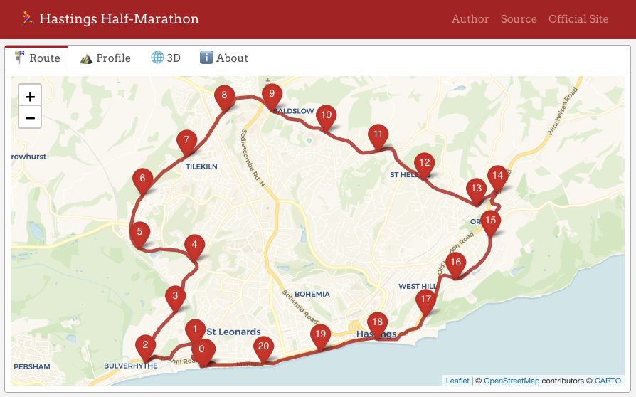

Running or climbing?
The Hastings Half is a popular and an interesting course, mostly because of the third dimension: there are two short, sharp early climbs, then a long sweeping one, later returning downhill to finish along the seafront of the town.
There are precious few resources online that illustrate the course, however. You can find a low-quality map on the official website and get an elevation profile elsewhere, but I thought it might be useful to create a quick and tiny webpage with the x, y and z dimensions in an interactive format.
Run route, run code
So, I recorded the route with my Apple Watch and downloaded the data as a GPX file, which contains geospatial data in an XML-like format. I’ve talked about Apple Health data before, and also about a small package I made to read GPX data, called {gpx3d}, which came in handy.
With that data I made three interactive maps using R:
- A birds-eye view with {leaflet}, which allows zooming and panning and has markers for each of the kilometres
- An elevation profile with {plotly}, which shows the distance and elevation on hover
- A 3D trace of the course with {ggrgl}, which can be dragged to show relative distance and elevation
I embedded these maps in three separate tabs of a {flexdashboard}, an R Markdown format that lets you create simple, single page dashboards. I used {bslib}, {thematic}, {emo} and Google Fonts for styles and embellishment.
I pushed the files to a GitHub repo and served the HTML via GitHub Pages to a dedicated webpage at matt-dray.github.io/hastings-half/.
Here are some screenshots of each page:
See you in 2023
Ultimately the webpage is a very quick demo, but I hope others will be able to use to get a sense of the course.
The next step will be to add fourth and fifth dimensions: smell and sound. As soon as you reach the bottom of All Saints Street you hit the historic Old Town seafront, where you’re immediately perked up by the scent of frying chips and the screech of extremely raucous seagulls.
There’s no place like home.
Environment
Session info
Last rendered: 2023-07-02 15:43:15 BST
R version 4.3.1 (2023-06-16)
Platform: aarch64-apple-darwin20 (64-bit)
Running under: macOS Ventura 13.2.1
Matrix products: default
BLAS: /Library/Frameworks/R.framework/Versions/4.3-arm64/Resources/lib/libRblas.0.dylib
LAPACK: /Library/Frameworks/R.framework/Versions/4.3-arm64/Resources/lib/libRlapack.dylib; LAPACK version 3.11.0
locale:
[1] en_US.UTF-8/en_US.UTF-8/en_US.UTF-8/C/en_US.UTF-8/en_US.UTF-8
time zone: Europe/London
tzcode source: internal
attached base packages:
[1] stats graphics grDevices utils datasets methods base
loaded via a namespace (and not attached):
[1] htmlwidgets_1.6.2 compiler_4.3.1 fastmap_1.1.1 cli_3.6.1
[5] tools_4.3.1 htmltools_0.5.5 rstudioapi_0.14 yaml_2.3.7
[9] rmarkdown_2.22 knitr_1.43.1 jsonlite_1.8.5 xfun_0.39
[13] digest_0.6.31 rlang_1.1.1 evaluate_0.21